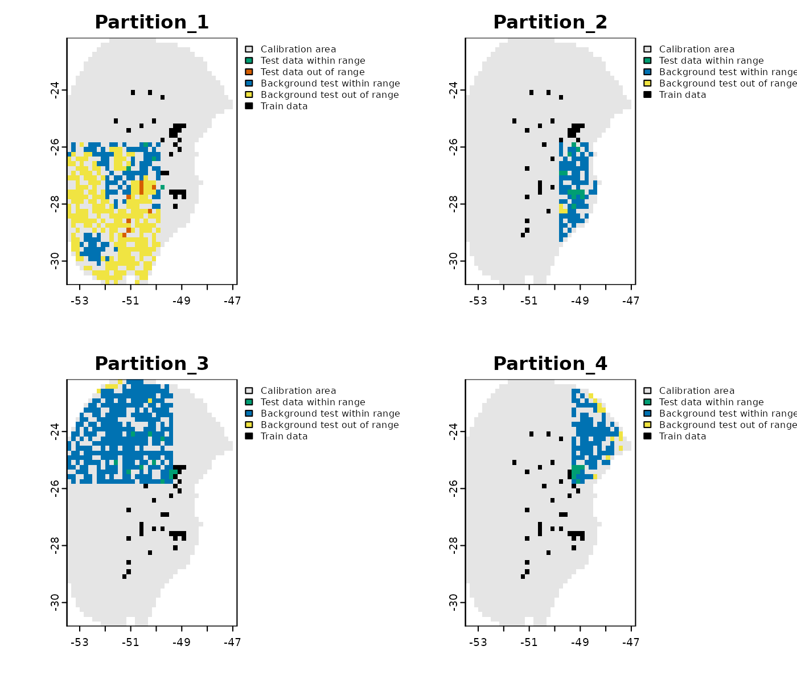
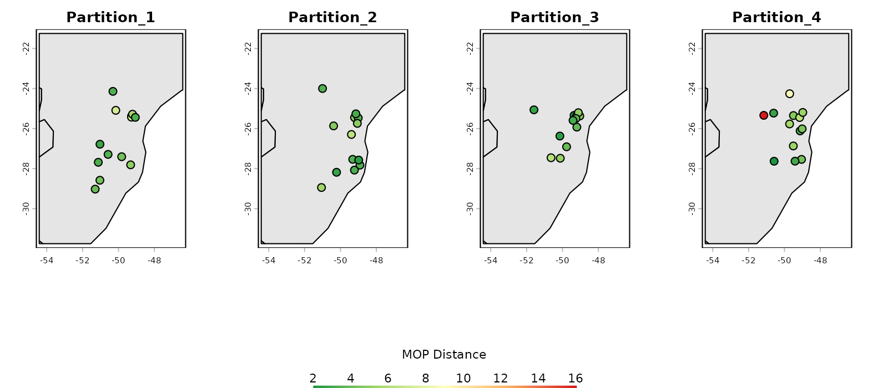
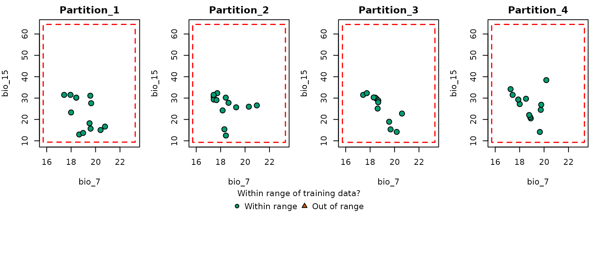
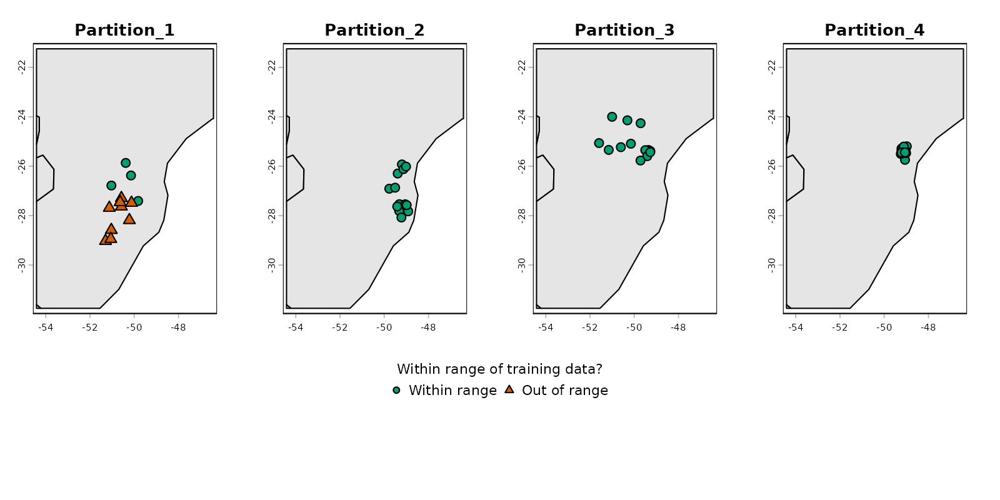
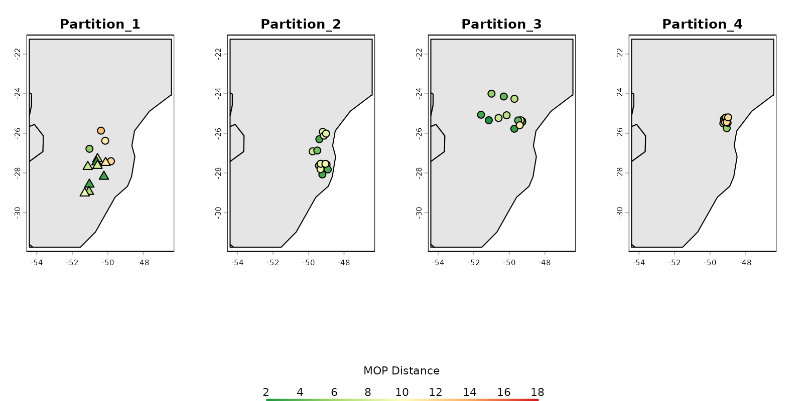

Summary
- Description
- Getting ready
- Preparing data
- Exploring prepared data
- More options to prepare data
- Saving prepared data
Description
Before starting the ENM process, data must be formatted in a specific
structure required by functions in kuenm2. This vignette
guides users through the steps necessary to prepare occurrence data and
environmental predictors using built-in tools. It covers the use of the
main functions, prepare_data() and
prepare_user_data(), to generate standardized objects that
are essential for model calibration. The guide also demonstrates options
to compute principal components from variables (PCA), incorporating
sampling bias, integrating data partitioning schemes from external
methods, exploring prepared data, and saving the data object for later
use.
Getting ready
If kuenm2 has not been installed yet, please do so. See
the Main guide for installation
instructions. See also the basic data
cleaning guide for some data cleaning steps.
Use the following lines of code to load kuenm2 and any
other required packages, and define a working directory (if needed). In
general, setting a working directory in R is considered good practice,
as it provides better control over where files are read from or saved
to. If users are not working within an R project, we recommend setting a
working directory, since at least one file will be saved at later stages
of this guide.
Note: functions from other packages (i.e., not from base R or
kuenm2 ) used in this guide will be displayed as
package::function().
# Load packages
library(kuenm2)
library(terra)
# Current directory
getwd()
# Define new directory
#setwd("YOUR/DIRECTORY") # uncomment and modify if setting a new directory
# Saving original plotting parameters
original_par <- par(no.readonly = TRUE)Preparing data
Example data
We will use occurrence records provided within the
kuenm2 package. Most example data in the package is derived
from Trindade & Marques
(2024). The occ_data object contains 51 occurrences of
Myrcia hatschbachii, a tree endemic to Southern Brazil.
Although this example data set has three columns (species, x, and y),
only two numeric columns with longitude and latitude coordinates are
required.
# Import occurrences
data(occ_data, package = "kuenm2")
# Check data structure
str(occ_data)
#> 'data.frame': 51 obs. of 3 variables:
#> $ species: chr "Myrcia hatschbachii" "Myrcia hatschbachii" "Myrcia hatschbachii" "Myrcia hatschbachii" ...
#> $ x : num -51.3 -50.6 -49.3 -49.8 -50.2 ...
#> $ y : num -29 -27.6 -27.8 -26.9 -28.2 ...As predictor variables, we will use another dataset included in the package. This dataset comprises four bioclimatic variables from WorldClim 2.1 at 10 arc-minute resolution, and a categorical variable (SoilType) from SoilGrids aggregated to 10 arc-minutes. All variables have been masked using a polygon that delimits the area for model calibration. This polygon was generated by drawing a minimum convex polygon around the records, with a 300 km buffer.
# Import raster layers
var <- terra::rast(system.file("extdata", "Current_variables.tif",
package = "kuenm2"))
# Check variables
terra::plot(var)
Visualize occurrences records in geography:
# Visualize occurrences on one variable
terra::plot(var[["bio_1"]], main = "Bio 1")
points(occ_data[, c("x", "y")], col = "black")
First steps in preparing data
The functions prepare_data() and
prepare_user_data() are central to getting data ready for
model calibration. They handles several key steps:
-
Defining the algorithm: Users can choose between
maxnetorglm. -
Generating background points: Background points are
sampled from raster layers (
prepare_data()), unless provided by the user (prepare_user_data()). Background points serve as a reference to contrast presence records. - Principal component analysis (PCA): An optional step that can be done with the variables provided.
-
Preparing calibration data: Presence records and
background points are associate with predictor values and put together
in a
data.frameto be used in the ENM. Calibration data is provided by the user inprepare_user_data(). -
Data partitioning: The function divides your data
to prepare training and testing sets via a cross-validation process. The
partitioning methods directly available include
kfolds,subsample, andbootstrap. - Defining grid of model parameters: This helps setting up combinations of feature classes (FCs), regularization multiplier (RM) values (for Maxnet), and sets of predictor variables. An explanation of the roles of RMs and FCs in Maxent models see Merow et al. 2013.
As with any function, we recommend checking the documentation with
help(prepare_data) for more detailed explanations. Now,
let’s prepare the data for model calibration, using 4 k-folds to
partition training and testing datasets:
# Prepare data for maxnet model
d <- prepare_data(algorithm = "maxnet",
occ = occ_data,
x = "x", y = "y",
raster_variables = var,
species = "Myrcia hatschbachii",
categorical_variables = "SoilType",
partition_method = "kfolds",
n_partitions = 4,
n_background = 1000,
features = c("l", "q", "lq", "lqp"),
r_multiplier = c(0.1, 1, 2))
#> Warning in handle_missing_data(occ_bg, weights): 43 rows were excluded from
#> database because NAs were found.The prepare_data() function returns a
prepared_data object, a list that contains several
essential components for model calibration. Below is an example of the
object’s printed output, which provides a summary of its contents.
print(d)
#> prepared_data object summary
#> ============================
#> Species: Myrcia hatschbachii
#> Number of Records: 1008
#> - Presence: 51
#> - Background: 957
#> Partition Method: kfolds
#> - Number of kfolds: 4
#> Continuous Variables:
#> - bio_1, bio_7, bio_12, bio_15
#> Categorical Variables:
#> - SoilType
#> PCA Information: PCA not performed
#> Weights: No weights provided
#> Calibration Parameters:
#> - Algorithm: maxnet
#> - Number of candidate models: 300
#> - Features classes (responses): l, q, lq, lqp
#> - Regularization multipliers: 0.1, 2, 1The parts of the prepared_data object can be explored in
further detail by indexing them as in the following example.
# Check the algorithm selected
d$algorithm
#> [1] "maxnet"
# See first rows of calibration data
head(d$calibration_data)
#> pr_bg bio_1 bio_7 bio_12 bio_15 SoilType
#> 1 1 16.49046 18.66075 1778 12.96107 19
#> 2 1 15.46644 19.65775 1560 14.14697 19
#> 3 1 15.70560 17.99450 1652 23.27548 6
#> 4 1 17.78899 19.55600 1597 18.91694 1
#> 5 1 15.50116 18.30750 1497 15.39440 19
#> 6 1 17.42421 17.25875 1760 34.17664 6
# See first rows of formula grid
head(d$formula_grid)
#> ID Formulas R_multiplier Features
#> 1 1 ~bio_1 + bio_7 -1 0.1 l
#> 2 2 ~bio_1 + bio_7 -1 2.0 l
#> 3 3 ~bio_1 + bio_7 -1 1.0 l
#> 4 4 ~bio_1 + bio_12 -1 2.0 l
#> 5 5 ~bio_1 + bio_12 -1 1.0 l
#> 6 6 ~bio_1 + bio_12 -1 0.1 lThe algorithms that can be selected are "maxnet" or
"glm". When using GLMs, regularization multipliers are not
used.
Now, let’s run an example using glm, this time using the
subsample partitioning method, with a total of 10
partitions, and 70% of the dataset used for training in every
iteration.
# Prepare data selecting GLM as the algorithm
d_glm <- prepare_data(algorithm = "glm",
occ = occ_data,
x = "x", y = "y",
raster_variables = var,
species = "Myrcia hatschbachii",
categorical_variables = "SoilType",
partition_method = "subsample",
n_partitions = 10,
train_proportion = 0.7,
n_background = 300,
features = c("l", "q", "p", "lq", "lqp"),
r_multiplier = NULL) # Not necessary with GLMs
#> Warning in handle_missing_data(occ_bg, weights): 8 rows were excluded from
#> database because NAs were found.
# Print object
d_glm
#> prepared_data object summary
#> ============================
#> Species: Myrcia hatschbachii
#> Number of Records: 343
#> - Presence: 51
#> - Background: 292
#> Partition Method: subsample
#> - Number of replicates:
#> - Train proportion: 0.7
#> Continuous Variables:
#> - bio_1, bio_7, bio_12, bio_15
#> Categorical Variables:
#> - SoilType
#> PCA Information: PCA not performed
#> Weights: No weights provided
#> Calibration Parameters:
#> - Algorithm: glm
#> - Number of candidate models: 122
#> - Features classes (responses): l, q, p, lq, lqpUsing pre-processed data
In some cases, users already have data that has been prepared for
model calibration (e.g., when data is prepared for time-specific
applications). When that is the case, the function
prepare_user_data() can take the pre-processed data and get
them ready for the next analyses. User-prepared data must be a
data.frame that includes a column with zeros and ones,
indicating presence (1) and background
(0) records, along with columns with values for each of the
variables. The package includes an example of such a
data.frame for reference (see below).
data("user_data", package = "kuenm2")
head(user_data)
#> pr_bg bio_1 bio_7 bio_12 bio_15 SoilType
#> 1 1 16.49046 18.66075 1778 12.96107 19
#> 2 1 15.46644 19.65775 1560 14.14697 19
#> 3 1 15.70560 17.99450 1652 23.27548 6
#> 4 1 17.78899 19.55600 1597 18.91694 1
#> 5 1 15.50116 18.30750 1497 15.39440 19
#> 7 1 17.42421 17.25875 1760 34.17664 6The prepare_user_data() function operates similarly to
prepare_data(), but with key differences. The main
difference is that instead of requiring a table with coordinates and a
SpatRaster of variables, it takes the already prepared
data.frame. See full documentation with
help(prepare_user_data).
# Prepare data for maxnet model
data_user <- prepare_user_data(algorithm = "maxnet",
user_data = user_data, # user-prepared data.frame
pr_bg = "pr_bg",
species = "Myrcia hatschbachii",
categorical_variables = "SoilType",
partition_method = "bootstrap",
features = c("l", "q", "p", "lq", "lqp"),
r_multiplier = c(0.1, 1, 2, 3, 5))
data_user
#> prepared_data object summary
#> ============================
#> Species: Myrcia hatschbachii
#> Number of Records: 527
#> - Presence: 51
#> - Background: 476
#> Partition Method: bootstrap
#> - Number of replicates:
#> - Train proportion: 0.7
#> Continuous Variables:
#> - bio_1, bio_7, bio_12, bio_15
#> Categorical Variables:
#> - SoilType
#> PCA Information: PCA not performed
#> Weights: No weights provided
#> Calibration Parameters:
#> - Algorithm: maxnet
#> - Number of candidate models: 610
#> - Features classes (responses): l, q, p, lq, lqp
#> - Regularization multipliers: 0.1, 1, 2, 3, 5This function also allows users to provide a list identifying which
points should be used for testing in each cross-validation iteration.
This can be useful to keep data partitions stable among distinct model
calibration routines. If user_folds is NULL
(the default), the function partitions the data according to
partition_method, n_partitions, and
train_proportion.
Exploring prepared data
In the following examples, we’ll use the object d,
prepared using the maxnet algorithm. The same can be done
with prepared_data using glm as de
algorithm.
Comparative histograms
Users can visualize the distribution of predictor values for
occurrence records, background points, and the entire calibration area
using histograms. An example is presented below. See full documentation
with help(explore_calibration_hist) and
help(plot_explore_calibration).
# Prepare histogram data
calib_hist <- explore_calibration_hist(data = d, raster_variables = var,
include_m = TRUE)
# Plot histograms
plot_calibration_hist(explore_calibration = calib_hist)
In the previous plot, gray represents values across the entire calibration area, blue background values, and green values at presence records (magnified by a factor of 2 to enhance visualization). Both the colors and the magnification factor can be customized.
If raster_variables are not available, exclude that
argument and include_m when running the function
explore_calibration_hist(). This could happen when users
have pre-processed data and run prepare_user_data().
Distribution of data for models
Additionally, users can explore the geographic distribution of
occurrences and background, as well as how they were partitioned. See
full documentation with help(explore_partition_geo).
# Explore spatial distribution
pbg <- explore_partition_geo(data = d, raster_variables = var[[1]])
# Plot exploration results in geography
terra::plot(pbg)
Note that, by default, background points are selected randomly within the calibration area. However, users can influence this selection by providing a bias file (see section More options to prepare data).
Similarity assessment in partitions
When partitioning data, some testing points may fall into environments that are different from those in which training points are. This forces the model to evaluate under extrapolation, testing its predictions on conditions outside its training range.
The explore_partition_extrapolation() function
calculates dissimilarity and detects non-analogous conditions in testing
points after comparing them to the training data for each partition.
Dissimilarity tests are performed using the mobility-oriented parity
metric (MOP; Owens et
al. 2013) as in Cobos et
al. (2024). This analysis only requires a prepared_data
object.
By default, the function
explore_partition_extrapolation() uses all training data
(presences and backgrounds) to define the environmental space of
reference, and computes MOP for testing records. If computing MOP for
test background points is needed, set
include_test_background = TRUE.
# Run extrapolation risk analysis
mop_partition <- explore_partition_extrapolation(data = d,
include_test_background = TRUE)The previous run returns a list in which the main outcome is
Mop_results. This is a data.frame, in which
each row is a testing record; the columns are:
- mop_distance: MOP distances;
- inside_range an indicator of whether environmental conditions at each testing record fall within the training range;
- n_var_out: number of variables outside the training range;
- towards_low and towards_high : names of variables with values lower or higher than the training range;
-
SoilType: because the
prepared_dataobject includes a categorical variable, it also contains a column indicating which categories in testing data were not present in training data.
# Check some of the results
head(mop_partition$Mop_results)
#> Partition pr_bg x y mop_distance inside_range n_var_out
#> 1 Partition_1 1 -51.29778 -29.02639 3.813469 TRUE 0
#> 3 Partition_1 1 -49.32222 -27.81167 3.671747 TRUE 0
#> 17 Partition_1 1 -51.03556 -28.58194 5.315553 TRUE 0
#> 18 Partition_1 1 -50.57972 -27.29056 3.240024 TRUE 0
#> 19 Partition_1 1 -49.82139 -27.40639 4.342539 TRUE 0
#> 26 Partition_1 1 -49.27361 -25.38528 4.623356 TRUE 0
#> towards_low towards_high SoilType
#> 1 <NA> <NA> <NA>
#> 3 <NA> <NA> <NA>
#> 17 <NA> <NA> <NA>
#> 18 <NA> <NA> <NA>
#> 19 <NA> <NA> <NA>
#> 26 <NA> <NA> <NA>
# Number of testing records with values outside training ranges
nrow(mop_partition$Mop_results[mop_partition$Mop_results$n_var_out > 1, ])
#> [1] 0Now we can use the function plot_explore_partition() to
visualize the records from each partition in both geographic and
environmental spaces. As comparisons were performed in environmental
space, to visualize results in geographic space the plotting functions
uses a simplified map of the world, but another spatial object can be
defined in calibration_area if needed.
The type MOP result to plot can be specified as: “simple” to show records in a partition within or out of envrionmental range of the other partitions; or “distance” to display the distance of each record to the nearest set of conditions in the other partitions.
# Simple plot in geographic space
plot_explore_partition(explore_partition = mop_partition, space = "G",
type_of_plot = "simple")
# Distance plot in geographic space
plot_explore_partition(explore_partition = mop_partition, space = "G",
type_of_plot = "distance",
lwd_legend = 4)
# Simple plot in environmental space
plot_explore_partition(explore_partition = mop_partition, space = "E",
type_of_plot = "simple",
variables = c("bio_7", "bio_15"))
# Distance plot in environmental space
plot_explore_partition(explore_partition = mop_partition, space = "E",
type_of_plot = "distance",
variables = c("bio_7", "bio_15"),
lwd_legend = 4)
The data used in this example was partitioned using k-folds which reduces the chances of finding novel conditions when comparing testing vs training sets of data. However, that might not be the case when using data partitioning methods such as spatial blocks (see Using external data partitions).
More options to prepare data
The examples of data preparation above show a few of the options that can be used to get data ready to start the ENM process. The next sections demonstrate other options available for data preparation, including: (1) customizing the list of model formulas to test in model calibration; (2) principal component analysis for variables; and (3) using external data partitioning methods.
Custom formulas
By default, kuenm2 builds the formula grid automatically
using the variables provided and the feature classes defined.
For instance, if raster_variables or
user_data contain bio_1 and bio_12, and
you set the features to lq (linear + quadratic), the
formula will include linear and quadratic terms for each variable. In
this example, the resulting formula would be:
"~ bio_1 + bio_12 + I(bio_1^2) + I(bio_12^2)"
#> [1] "~ bio_1 + bio_12 + I(bio_1^2) + I(bio_12^2)"Instead of letting the functions build formulas based on selected features, users can provide custom formulas. This is useful when full control over which terms are included is needed (for example, including the quadratic version of specific variables):
# Set custom formulas
my_formulas <- c("~ bio_1 + bio_12 + I(bio_1^2) + I(bio_12^2)",
"~ bio_1 + bio_12 + I(bio_1^2)",
"~ bio_1 + bio_12 + I(bio_12^2)",
"~ bio_1 + I(bio_1^2) + I(bio_12^2)")
# Prepare data using custom formulas
d_custom_formula <- prepare_data(algorithm = "maxnet",
occ = occ_data,
x = "x", y = "y",
raster_variables = var,
species = "Myrcia hatschbachii",
categorical_variables = "SoilType",
partition_method = "kfolds",
n_partitions = 4,
n_background = 1000,
user_formulas = my_formulas, # Custom formulas
r_multiplier = c(0.1, 1, 2))
#> Warning in handle_missing_data(occ_bg, weights): 43 rows were excluded from
#> database because NAs were found.
# Check formula grid
d_custom_formula$formula_grid
#> ID Formulas R_multiplier Features
#> 1 1 ~ bio_1 + bio_12 + I(bio_1^2) + I(bio_12^2) -1 0.1 User_q
#> 2 2 ~ bio_1 + bio_12 + I(bio_1^2) -1 0.1 User_q
#> 3 3 ~ bio_1 + bio_12 + I(bio_12^2) -1 0.1 User_q
#> 4 4 ~ bio_1 + I(bio_1^2) + I(bio_12^2) -1 0.1 User_q
#> 5 5 ~ bio_1 + bio_12 + I(bio_1^2) + I(bio_12^2) -1 1.0 User_q
#> 6 6 ~ bio_1 + bio_12 + I(bio_1^2) -1 1.0 User_q
#> 7 7 ~ bio_1 + bio_12 + I(bio_12^2) -1 1.0 User_q
#> 8 8 ~ bio_1 + I(bio_1^2) + I(bio_12^2) -1 1.0 User_q
#> 9 9 ~ bio_1 + bio_12 + I(bio_1^2) + I(bio_12^2) -1 2.0 User_q
#> 10 10 ~ bio_1 + bio_12 + I(bio_1^2) -1 2.0 User_q
#> 11 11 ~ bio_1 + bio_12 + I(bio_12^2) -1 2.0 User_q
#> 12 12 ~ bio_1 + I(bio_1^2) + I(bio_12^2) -1 2.0 User_qUsing a bias file
A bias file is a SpatRaster object that contains values
that influence the selection of background points within the calibration
area. This can be particularly useful for mitigating sampling bias. For
instance, if we want the selection of background points to be informed
by how historical sampling has been, a layer of the density of records
from a target group can be used (see Ponder et
al. 2001, Anderson et
al. 2003, and Barber et
al. 2020). The bias file must have the same extent, resolution, and
number of cells as your raster variables.
Let’s illustrate this process with an example bias file included in
the package. This SpatRaster has lower values in the center
and higher values towards the borders of the area:
# Import a bias file
bias <- terra::rast(system.file("extdata", "bias_file.tif", package = "kuenm2"))
# Check the bias values
terra::plot(bias)
This bias layer will be used to prepare two new datasets: one with a “direct” bias effect (with higher probability of selecting background points in regions with higher bias values) and another with an “inverse” effect (the oposite).
# Using a direct bias effect in sampling
d_bias_direct <- prepare_data(algorithm = "maxnet",
occ = occ_data,
x = "x", y = "y",
raster_variables = var,
species = "Myrcia hatschbachii",
categorical_variables = "SoilType",
n_background = 1000,
partition_method = "kfolds",
bias_file = bias, bias_effect = "direct", # bias parameters
features = c("l", "q", "p", "lq", "lqp"),
r_multiplier = c(0.1, 1, 2, 3, 5))
#> Warning in handle_missing_data(occ_bg, weights): 57 rows were excluded from
#> database because NAs were found.
# Using an indirect bias effect
d_bias_inverse <- prepare_data(algorithm = "maxnet",
occ = occ_data,
x = "x", y = "y",
raster_variables = var,
species = "Myrcia hatschbachii",
categorical_variables = "SoilType",
n_background = 1000,
partition_method = "kfolds",
bias_file = bias, bias_effect = "inverse", # bias parameters
features = c("l", "q", "p", "lq", "lqp"),
r_multiplier = c(0.1, 1, 2, 3, 5))
#> Warning in handle_missing_data(occ_bg, weights): 45 rows were excluded from
#> database because NAs were found.Let’s use the explore_partition_geo function to see the
effect of using a bias file.
# Explore spatial distribution of points
## No bias
geo_dist <- explore_partition_geo(data = d, raster_variables = var)
## Direct bias effect
geo_dist_bias <- explore_partition_geo(data = d_bias_direct,
raster_variables = var)
## Inverse bias effect
geo_dist_bias_inv <- explore_partition_geo(data = d_bias_inverse,
raster_variables = var)
## Adjusting plotting grid
par(mfrow = c(2, 2))
## The plots to show sampling bias effects
terra::plot(bias, main = "Bias file")
terra::plot(geo_dist$Background, main = "Random Background",
plg = list(cex = 0.75)) # Decrease size of legend text)
terra::plot(geo_dist_bias$Background, main = "Direct Bias Effect",
plg = list(cex = 0.75)) # Decrease size of legend text)
terra::plot(geo_dist_bias_inv$Background, main = "Inverse Bias Effect",
plg = list(cex = 0.75)) # Decrease size of legend text)
PCA for variables
A common approach in ENM involves summarizing the information from a
set of variables into a smaller set of orthogonal variables using
Principal Component Analysis (PCA) (see Cruz-Cardenaz et al. 2014
for an example). kuenm2 has options to perform a PCA
internally or use variables that have been externally prepared as
PCs.
Internal PCA
kuenm2 can perform all PCA transformations internally,
which eliminates the need of transforming raw variables into PCs when
producing projections later on. This is particularly advantageous when
projecting model results across multiple scenarios (e.g., various Global
Climate Models for different future periods). By performing PCA
internally, you only need to provide the raw environmental variables
(e.g., bio_1, bio_2, etc.) when making
projections; helper functions will handle the PCA transformation
internally.
Let’s explore how to implement this:
# Prepare data for maxnet models using PCA parameters
d_pca <- prepare_data(algorithm = "maxnet",
occ = occ_data,
x = "x", y = "y",
raster_variables = var,
do_pca = TRUE, center = TRUE, scale = TRUE, # PCA parameters
species = "Myrcia hatschbachii",
categorical_variables = "SoilType",
n_background = 1000,
partition_method = "kfolds",
features = c("l", "q", "p", "lq", "lqp"),
r_multiplier = c(0.1, 1, 2, 3, 5))
#> Warning in handle_missing_data(occ_bg, weights): 43 rows were excluded from
#> database because NAs were found.
print(d_pca)
#> prepared_data object summary
#> ============================
#> Species: Myrcia hatschbachii
#> Number of Records: 1008
#> - Presence: 51
#> - Background: 957
#> Partition Method: kfolds
#> - Number of kfolds: 4
#> Continuous Variables:
#> - bio_1, bio_7, bio_12, bio_15
#> Categorical Variables:
#> - SoilType
#> PCA Information:
#> - Variables included: bio_1, bio_7, bio_12, bio_15
#> - Number of PCA components: 4
#> Weights: No weights provided
#> Calibration Parameters:
#> - Algorithm: maxnet
#> - Number of candidate models: 610
#> - Features classes (responses): l, q, p, lq, lqp
#> - Regularization multipliers: 0.1, 1, 2, 3, 5The elements calibration_data and
formula_grid have now been generated considering the
principal components (PCs). By default, all continuous variables were
included in the PCA, while categorical variables (e.g., “SoilType”) were
excluded. The default settings to define the number of PCs to retain
keeps as many PCs as needed to collectively explain 95% of the total
variance, and then further filter these, keeping only those axes that
individually explain at least 5% of the variance. These parameters can
be changed using the arguments in the function
prepare_data().
# Check calibration data
head(d_pca$calibration_data)
#> pr_bg PC1 PC2 PC3 PC4 SoilType
#> 1 1 1.48690341 1.01252697 0.1180156 -0.09119257 19
#> 2 1 1.46028074 0.17701144 1.1573461 -0.12326796 19
#> 3 1 0.82676494 1.21965795 0.8145129 -0.67588891 6
#> 4 1 0.62680441 0.03967459 0.1525997 0.18784282 1
#> 5 1 0.94584897 0.93302089 1.4382424 -0.03192094 19
#> 6 1 -0.07597437 1.55268331 -0.2007953 -0.98153204 6
# Check formula grid
head(d_pca$formula_grid)
#> ID Formulas R_multiplier Features
#> 1 1 ~PC1 + PC2 -1 0.1 l
#> 2 2 ~PC1 + PC2 -1 1.0 l
#> 3 3 ~PC1 + PC2 -1 2.0 l
#> 4 4 ~PC1 + PC2 -1 3.0 l
#> 5 5 ~PC1 + PC2 -1 5.0 l
#> 6 6 ~PC1 + PC3 -1 5.0 l
# Explore variables distribution
calib_hist_pca <- explore_calibration_hist(data = d_pca, raster_variables = var,
include_m = TRUE, breaks = 7)
plot_calibration_hist(explore_calibration = calib_hist_pca)
External PCA
Users can choose to perform a PCA with their data by using the
perform_pca() function, or one of their preference. Se an
example with perform_pca() below:
# PCA with raw raster variables
pca_var <- perform_pca(raster_variables = var, exclude_from_pca = "SoilType",
center = TRUE, scale = TRUE)
# Plot
terra::plot(pca_var$env)
Now, let’s use the PCs generated by perform_pca() to
prepare the data:
# Prepare data for maxnet model using PCA variables
d_pca_extern <- prepare_data(algorithm = "maxnet",
occ = occ_data,
x = "x", y = "y",
raster_variables = pca_var$env, # Output of perform_pca()
do_pca = FALSE, # Set to FALSE because variables are PCs
species = "Myrcia hatschbachii",
categorical_variables = "SoilType",
n_background = 1000,
partition_method = "kfolds",
features = c("l", "q", "p", "lq", "lqp"),
r_multiplier = c(0.1, 1, 2, 3, 5))
#> Warning in handle_missing_data(occ_bg, weights): 43 rows were excluded from
#> database because NAs were found.
# Check the object
print(d_pca_extern)
#> prepared_data object summary
#> ============================
#> Species: Myrcia hatschbachii
#> Number of Records: 1008
#> - Presence: 51
#> - Background: 957
#> Partition Method: kfolds
#> - Number of kfolds: 4
#> Continuous Variables:
#> - PC1, PC2, PC3, PC4
#> Categorical Variables:
#> - SoilType
#> PCA Information: PCA not performed
#> Weights: No weights provided
#> Calibration Parameters:
#> - Algorithm: maxnet
#> - Number of candidate models: 610
#> - Features classes (responses): l, q, p, lq, lqp
#> - Regularization multipliers: 0.1, 1, 2, 3, 5
# Check formula grid
head(d_pca_extern$formula_grid)
#> ID Formulas R_multiplier Features
#> 1 1 ~PC1 + PC2 -1 0.1 l
#> 2 2 ~PC1 + PC2 -1 1.0 l
#> 3 3 ~PC1 + PC2 -1 2.0 l
#> 4 4 ~PC1 + PC2 -1 3.0 l
#> 5 5 ~PC1 + PC2 -1 5.0 l
#> 6 6 ~PC1 + PC3 -1 5.0 lNote that since PCA was performed externally,
do_pca = FALSE is set in prepare_data(). This
is crucial because setting it to TRUE would incorrectly
apply PCA to variables that are already PCs. The
prepared_data object in this scenario does not store any
PCA-related information. Therefore, users must provide
PCs instead of raw raster variables when projecting models.
Using external data partitions
The functions prepare_data() and
prepare_user_data() in the kuenm2 package
include four built-in methods for data partitioning:
“kfolds”: Splits the dataset into K subsets (folds) of approximately equal size. In each partition, one fold is used as the test set, while the remaining folds are combined to form the training set.
“bootstrap”: Creates the training dataset by sampling observations from the original dataset with replacement (i.e., the same observation can be selected multiple times). The test set consists of the observations that were not selected in that specific replicate.
“subsample”: Similar to bootstrap, but the training set is created by sampling without replacement (i.e., each observation is selected once). The test set includes the observations not selected for training.
Other methods for data partitioning are also available, including
those based on spatial rules (Radosavljevic
and Anderson, 2014). Although kuenm2 does not currently
implement spatial partitioning techniques, it is possible to use the
ones implemented in other R packages. After partitioning data using
other packages, those results can be used to replace the
part_data section in the prepared_data object
from kuenm2.
ENMeval partitions
The ENMeval package (Kass et al. 2021) provides three spatial partitioning methods:
Spatial block: Divides occurrence data into four groups based on latitude and longitude, aiming for groups of roughly equal number of occurrences.
Checkerboard 1 (basic): Generates a checkerboard grid over the study area and assigns points to groups based on their location in the grid.
Checkerboard 2 (hierarchical): Aggregates the input raster at two hierarchical spatial scales using specified aggregation factors. Points are then grouped based on their position in the resulting hierarchical checkerboard.
Let’s use the spatial block method as an example. We
will use the object d, prepared_data created
in previous steps.
# Install ENMeval if not already installed
if(!require("ENMeval")){
install.packages("ENMeval")
}
# Extract calibration data from the prepared_data object and
# separate presence and background records
calib_occ <- d$data_xy[d$calibration_data$pr_bg == 1, ] # Presences
calib_bg <- d$data_xy[d$calibration_data$pr_bg == 0, ] # Background
# Apply spatial block partitioning using ENMeval
enmeval_block <- ENMeval::get.block(occs = calib_occ, bg = calib_bg)
# Inspect the structure of the output
str(enmeval_block)
#> List of 2
#> $ occs.grp: num [1:51] 1 1 2 2 1 4 2 2 4 2 ...
#> $ bg.grp : num [1:957] 2 4 4 1 3 3 3 1 1 3 ...The output of get.block() is a list with two elements:
occs.grp and bg.grp. The occs.grp
vector is for occurrence records and bg.grp for background
points. Both vectors contain numeric values from 1 to 4, indicating the
spatial group.
kuenm2 stores partitioned data as a list of
vectors, in which each vector is a partition, containing the
indices of points left out for testing. The indices
include both presence and background points.
str(d$part_data)
#> List of 4
#> $ Partition_1: num [1:253] 1 3 12 13 14 20 24 25 34 43 ...
#> $ Partition_2: num [1:252] 5 7 8 10 15 17 23 27 31 33 ...
#> $ Partition_3: num [1:251] 4 9 19 21 28 29 30 32 35 36 ...
#> $ Partition_4: num [1:252] 2 6 11 16 18 22 26 37 38 40 ...We can convert the spatial group information stored in
enmeval_block into a list compatible with
kuenm2:
# Identify unique spatial blocks
id_blocks <- sort(unique(unlist(enmeval_block)))
# Create a list of test indices for each spatial block
new_part_data <- lapply(id_blocks, function(i) {
# Indices of occurrence records in group i
rep_i_presence <- which(enmeval_block$occs.grp == i)
# Indices of background records in group i
rep_i_bg <- which(enmeval_block$bg.grp == i)
# To get the right indices for background,
# we need to sum the total number of records to background indices
rep_i_bg <- rep_i_bg + nrow(occ_data)
# Combine presence and background indices for the test set
c(rep_i_presence, rep_i_bg)
})
# Assign names to each partition
names(new_part_data) <- paste0("Partition_", id_blocks)
# Inspect the structure of the new partitioned data
str(new_part_data)
#> List of 4
#> $ Partition_1: int [1:406] 1 2 5 12 13 14 15 29 31 42 ...
#> $ Partition_2: int [1:108] 3 4 7 8 10 16 18 22 27 36 ...
#> $ Partition_3: int [1:367] 11 19 20 21 24 26 30 33 34 38 ...
#> $ Partition_4: int [1:127] 6 9 17 23 25 28 32 35 37 39 ...We now have a list containing four vectors, each storing the indices
of test data defined using the get.block() function from
the ENMeval package. The final step is to replace the
original part_data in the prepared_data object
with new_part_data. We should also update the partitioning
method to reflect this change.
# Replace the original partition data with the new spatial blocks
d_spatial_block <- d
d_spatial_block$part_data <- new_part_data
# Update the partitioning method to reflect the new approach
d_spatial_block$partition_method <- "Spatial block (ENMeval)" # Any name works
# Print the updated prepared_data object
print(d_spatial_block)
#> prepared_data object summary
#> ============================
#> Species: Myrcia hatschbachii
#> Number of Records: 1008
#> - Presence: 51
#> - Background: 957
#> Partition Method: Spatial block (ENMeval)
#> Continuous Variables:
#> - bio_1, bio_7, bio_12, bio_15
#> Categorical Variables:
#> - SoilType
#> PCA Information: PCA not performed
#> Weights: No weights provided
#> Calibration Parameters:
#> - Algorithm: maxnet
#> - Number of candidate models: 300
#> - Features classes (responses): l, q, lq, lqp
#> - Regularization multipliers: 0.1, 2, 1Let’s check the spatial distribution of the partitioned data:
# Explore data partitioning in geography
geo_block <- explore_partition_geo(d_spatial_block, raster_variables = var[[1]])
# Plot data partition in geography
terra::plot(geo_block[[c("Presence", "Background")]])
Because environmental conditions often vary by region, using spatial
blocks increases the chances of having testing records outside training
environmental ranges. Let’s explore this effect using the
prepared_data object, partitioned with ENMeval
spatial blocks.
# Run extrapolation risk analysis
mop_blocks <- explore_partition_extrapolation(data = d_spatial_block,
include_test_background = TRUE)
# Check some testing records with values outside training ranges
head(mop_blocks$Mop_results[mop_blocks$Mop_results$n_var_out > 1, ])
#> Partition pr_bg x y mop_distance inside_range n_var_out
#> 87 Partition_1 0 -50.75000 -30.75000 12.57765 FALSE 2
#> 129 Partition_1 0 -51.75000 -29.91667 10.91112 FALSE 2
#> 193 Partition_1 0 -53.41667 -27.08333 43.59743 FALSE 2
#> 199 Partition_1 0 -52.41667 -26.75000 171.15194 FALSE 2
#> 252 Partition_1 0 -51.58333 -30.75000 15.76803 FALSE 2
#> 261 Partition_1 0 -53.25000 -27.08333 43.59052 FALSE 2
#> towards_low towards_high SoilType
#> 87 bio_15 <NA> 21
#> 129 bio_15 <NA> 21
#> 193 bio_15 bio_7 <NA>
#> 199 bio_15 bio_12 <NA>
#> 252 bio_15 <NA> 21
#> 261 bio_15 bio_7 <NA>
# Check simple extrapolation in geographic space
plot_explore_partition(explore_partition = mop_blocks, space = "G",
type_of_plot = "simple")
# Now in environmental space
plot_explore_partition(explore_partition = mop_blocks, space = "E",
type_of_plot = "simple",
variables = c("bio_7", "bio_15"))
Note that in partition 1, some occurrence records fall outside the envrionmental range of the other partitions (the same happens with many background records).
flexsdm partitions
The package flexsdm (Velazco
et al. 2022) also offers multiple partitioning methods. We will use
the method spatial block cross-validation. In this method, the number
and size of blocks is optimized internally considering spatial
autocorrelation, environmental similarity, and the number of presence
and background records within each partition. For more details, see Data
partitioning at the package website.
# Install flexsdm if not already installed
if (!require("flexsdm")) {
if (!require("remotes")) {
install.packages("remotes")
}
remotes::install_github("sjevelazco/flexsdm") # needs compilation tools to work
}
# Combine calibration data with spatial coordinates
calib_data <- cbind(d$data_xy, d$calibration_data)
# Split data in test and train using flexsdm
flexsdm_block <- flexsdm::part_sblock(env_layer = var, data = calib_data,
x = "x", y = "y", pr_ab = "pr_bg",
min_res_mult = 1, max_res_mult = 500,
num_grids = 30, n_part = 4,
prop = 0.5)
#> The following grid cell sizes will be tested:
#> 0.17 | 3.03 | 5.9 | 8.77 | 11.64 | 14.51 | 17.37 | 20.24 | 23.11 | 25.98 |
#> 28.84 | 31.71 | 34.58 | 37.45 | 40.32 | 43.18 | 46.05 | 48.92 | 51.79 |
#> 54.66 | 57.52 | 60.39 | 63.26 | 66.13 | 68.99 | 71.86 | 74.73 | 77.6 |
#> 80.47 | 83.33
#>
#> Creating basic raster mask...
#>
#> Searching for the optimal grid size...
# See the structure of the object
str(flexsdm_block$part)
#> Classes ‘tbl_df’, ‘tbl’ and 'data.frame': 1008 obs. of 4 variables:
#> $ x : num -51.3 -50.6 -49.3 -49.8 -50.2 ...
#> $ y : num -29 -27.6 -27.8 -26.9 -28.2 ...
#> $ pr_ab: num 1 1 1 1 1 1 1 1 1 1 ...
#> $ .part: int 3 1 3 2 3 3 1 4 4 3 ...The output from flexsdm differs from that of
ENMeval. Instead of returning a list with separate vectors
of spatial group IDs, flexsdm appends the group assignments
as a new column in the part element of its output.
As with the ENMeval example, we can transform the spatial group
information stored in flexsdm_block into a format
compatible with kuenm2:
# Identify unique spatial blocks from flexsdm output
id_blocks <- sort(unique(flexsdm_block$part$.part))
# Create a list of test indices for each spatial block
new_part_data_flexsdm <- lapply(id_blocks, function(i) {
# Indices of occurrences and background points in group i
which(flexsdm_block$part$.part == i)
})
# Assign names to each partition partition
names(new_part_data_flexsdm) <- paste0("Partition_", id_blocks)
# Inspect the structure of the new partitioned data
str(new_part_data_flexsdm)
#> List of 4
#> $ Partition_1: int [1:248] 2 7 13 21 24 25 26 27 36 40 ...
#> $ Partition_2: int [1:266] 4 12 15 17 18 19 29 31 32 33 ...
#> $ Partition_3: int [1:247] 1 3 5 6 10 16 20 28 34 35 ...
#> $ Partition_4: int [1:247] 8 9 11 14 22 23 30 37 38 41 ...
# Replace the partition data in the prepared_data object
d_block_flexsdm <- d
d_block_flexsdm$part_data <- new_part_data_flexsdm
# Update the partition method description
d_block_flexsdm$partition_method <- "Spatial block (flexsdm)" # any name works
# Display the updated prepared_data object
print(d_block_flexsdm)
#> prepared_data object summary
#> ============================
#> Species: Myrcia hatschbachii
#> Number of Records: 1008
#> - Presence: 51
#> - Background: 957
#> Partition Method: Spatial block (flexsdm)
#> Continuous Variables:
#> - bio_1, bio_7, bio_12, bio_15
#> Categorical Variables:
#> - SoilType
#> PCA Information: PCA not performed
#> Weights: No weights provided
#> Calibration Parameters:
#> - Algorithm: maxnet
#> - Number of candidate models: 300
#> - Features classes (responses): l, q, lq, lqp
#> - Regularization multipliers: 0.1, 2, 1Let’s check the spatial distribution of the partitioned data:
# Explore data partitioning in geography
geo_block_flexsdm <- explore_partition_geo(d_block_flexsdm,
raster_variables = var[[1]])
# Plot data partition in geography
terra::plot(geo_block_flexsdm[[c("Presence", "Background")]])
# Reset plotting parameters
par(original_par) Saving prepared data
The prepared_data object is crucial for the next step in
the ENM workflow in kuenm2, model calibration. As this
object is essentially a list, users can save it to a local directory
using saveRDS(). Saving the object facilitates loading it
back into your R session later using readRDS(). See an
example below: